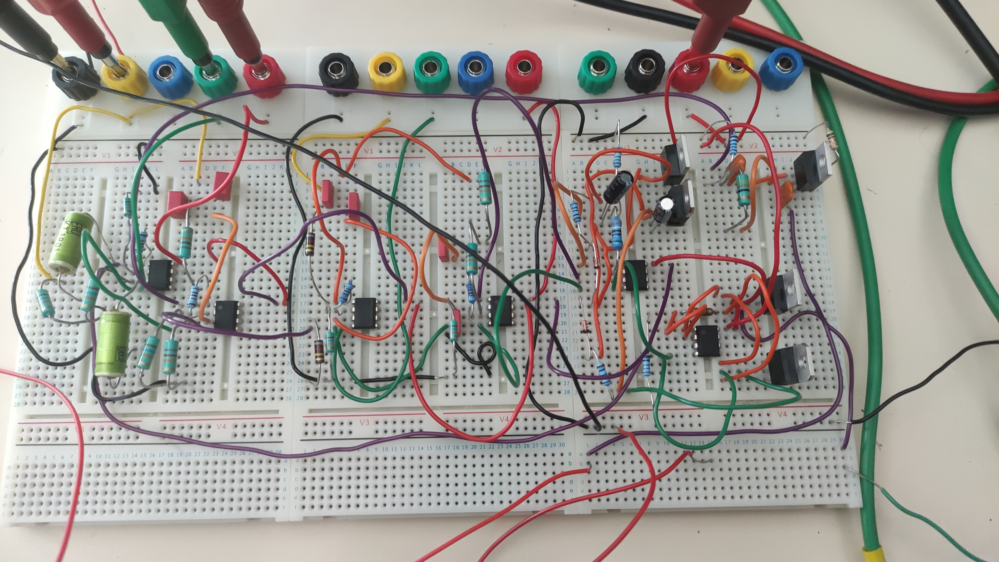
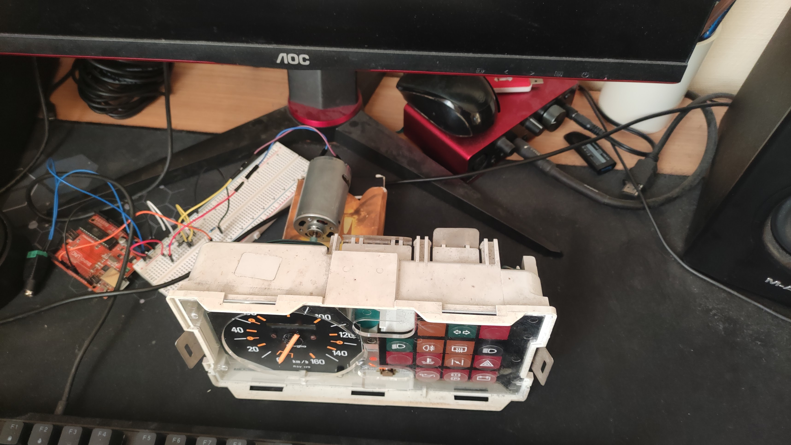

Lazare du Pontavice
Technicien Supérieur en Électronique & Informatique
Étudiant en BUT3 - Spécialité Électronique et Systèmes Embarqués (ESE)
Mes Compétences Techniques
Électronique & Embarqué
- Microcontrôleurs : STM32, Arduino, PIC (MPLAB/Pickit 4)
- Conception PCB : KiCad
- Bus de com. : CAN, I2C, UART
- Instrumentation : LabView, GBF, Oscillo
Informatique Industrielle
- Langages : C, Python, C++
- Conception 3D : SolidWorks
- Automatisme : Schneider (Machine Expert), LD
- Robotique : Cobot Expert
Gestion de Projet
- Gestion d'équipe (Chef de projet)
- Suivi de prototypes
- Anglais Bilingue
- Permis B + Véhicule
Projets Académiques & Personnels

Station Météo & Bus CAN
Système d'acquisition météo multi-capteurs avec communication industrielle.
MPLAB Bus CAN I2C
Système Audio 3 Voies
Chef de projet : Conception et réalisation d'une enceinte acoustique complète.
Gestion Projet Analogique
Sim-Racing Renault 4/5
Interfaçage d'un vrai tableau de bord de voiture pour jeux de simulation.
Arduino DIY Gaming